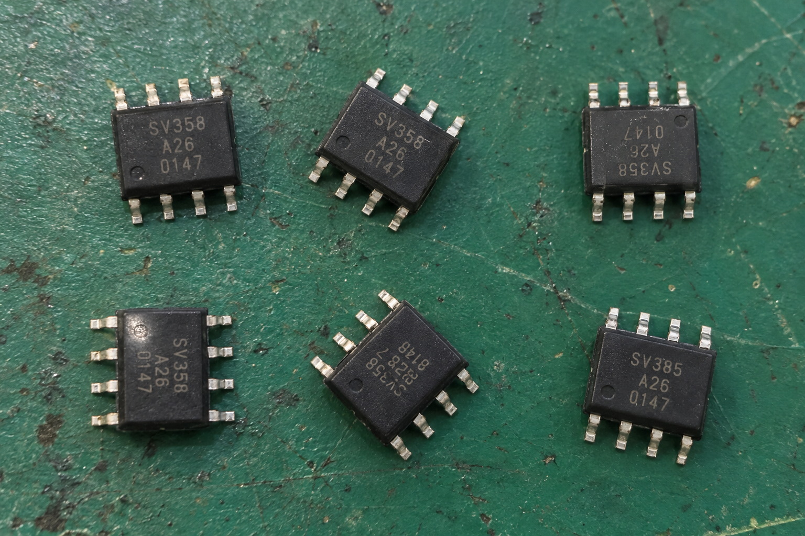
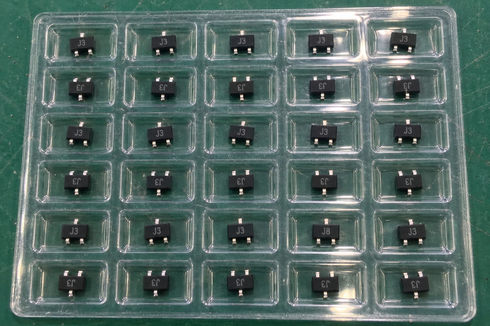
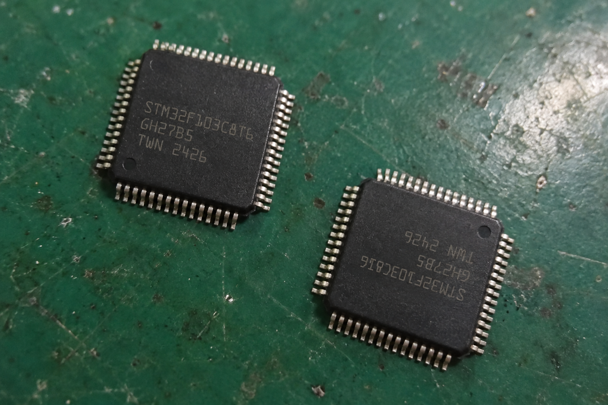
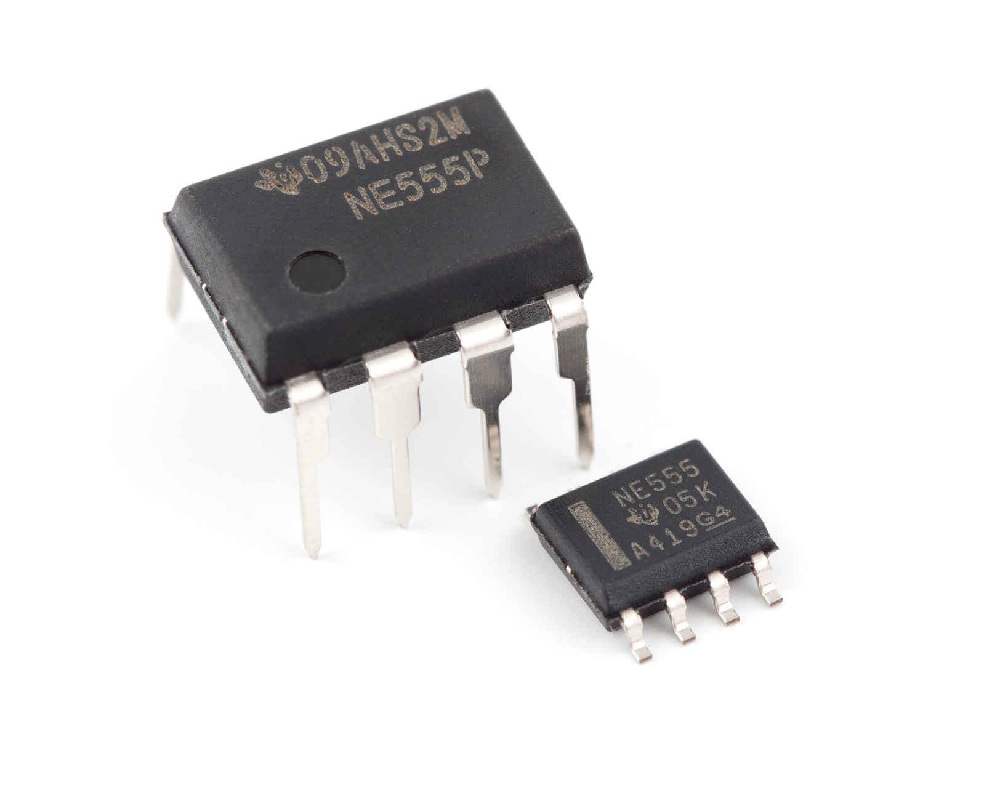
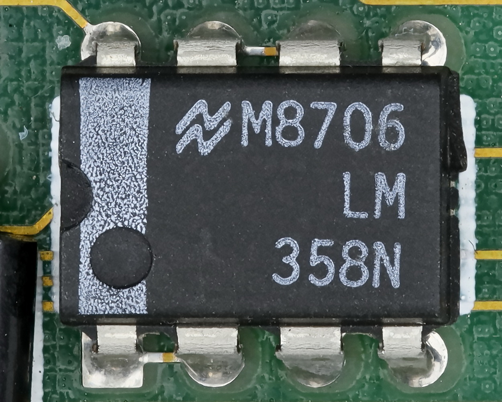
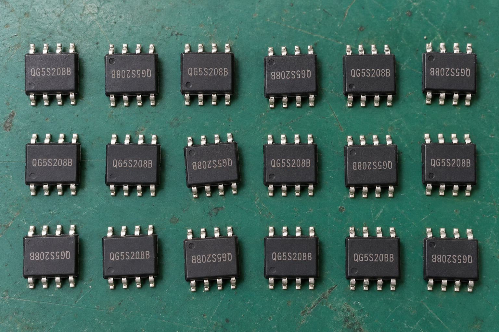
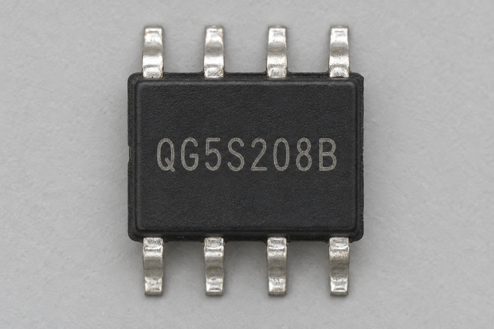
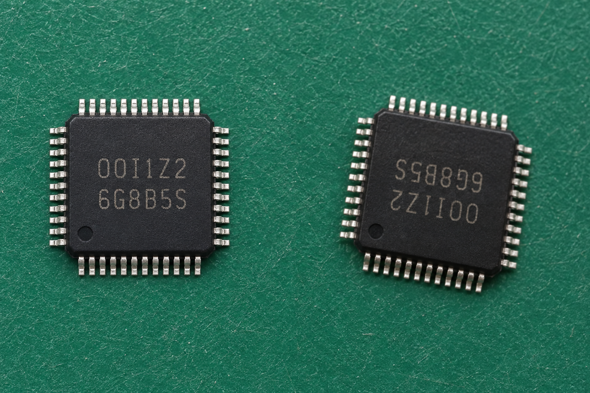
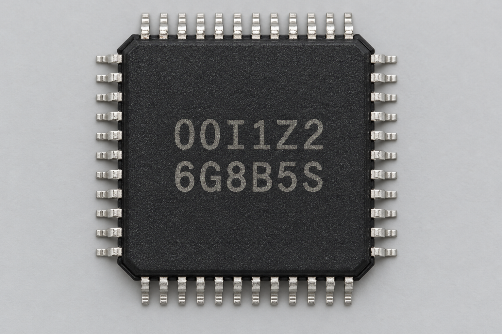

2026-11-01 · 本机研究 · 正常检验仍使用 VLM
小模型读字，定位与方向分开验证
9 张图片，63 次元件出现。60 次可按像素核验主码；另 3 次形近字按录入人员声明单列观察。合成图和公开实拍用于探索，不能代表公司现场准确率。
需要保留的反例：18 件样片中的 C08、C17 有预设字符差异。原有 VLM 配置延长到 180 秒后仍将两件判为合格；三套 OCR 开启方向分类后在这一张图上都读对了 18 件主码。不能把任一模型的高分当作正确答案。
研究说明与来源 · 公开图片署名与许可
scattered-six

C01 SV358
C02 SV358
C03 SV358
C04 SV358
C05 SV358
C06 SV385
耗时为单次已加载 CPU 推理，2 线程；不同模式处理次数不同。人工框只用于评估归属及方向实验，不是自动定位结果。
SAM 2.1 Tiny 自动网格：12 个候选，3.00 秒，查看多余框和漏件
8×8 点网格，不按元件类别过滤；框可能属于背景、托盘或引脚。这不是逐元件真值。
tray-thirty

C01 J3
C02 J3
C03 J3
C04 J3
C05 J3
C06 J3
C07 J3
C08 J3
C09 J3
C10 J3
C11 J3
C12 J3
C13 J3
C14 J3
C15 J3
C16 J3
C17 J3
C18 J3
C19 J3
C20 J3
C21 J3
C22 J3
C23 J3
C24 J8
C25 J3
C26 J3
C27 J3
C28 J3
C29 J3
C30 J3
耗时为单次已加载 CPU 推理，2 线程；不同模式处理次数不同。人工框只用于评估归属及方向实验，不是自动定位结果。
SAM 2.1 Tiny 自动网格：9 个候选，2.76 秒，查看多余框和漏件
8×8 点网格，不按元件类别过滤；框可能属于背景、托盘或引脚。这不是逐元件真值。
long-code-pair

C01 STM32F103C8T6
C02 STM32F103C8I6
耗时为单次已加载 CPU 推理，2 线程；不同模式处理次数不同。人工框只用于评估归属及方向实验，不是自动定位结果。
public-ne555

C01 NE555P
C02 NE555
耗时为单次已加载 CPU 推理，2 线程；不同模式处理次数不同。人工框只用于评估归属及方向实验，不是自动定位结果。
public-lm358

C01 358N
耗时为单次已加载 CPU 推理，2 线程；不同模式处理次数不同。人工框只用于评估归属及方向实验，不是自动定位结果。
eighteen-two-differences

C01 QG5S208B
C02 QG5S208B
C03 QG5S208B
C04 QG5S208B
C05 QG5S208B
C06 QG5S208B
C07 QG5S208B
C08 Q65S208B
C09 QG5S208B
C10 QG5S208B
C11 QG5S208B
C12 QG5S208B
C13 QG5S208B
C14 QG5S208B
C15 QG5S208B
C16 QG5S208B
C17 QG5S20BB
C18 QG5S208B
耗时为单次已加载 CPU 推理，2 线程；不同模式处理次数不同。人工框只用于评估归属及方向实验，不是自动定位结果。
VLM 对照：整图未提供人工文字时 94.18 秒，提供后 91.58 秒，两次均将 18 件判合格，漏掉 C08/C17。按人工位置分别裁出后，两件都被正确判为不合格（22.27 / 21.85 秒）。以下只放大原像素，不重绘文字。
C08 · Q65S208B · 逐件 VLM：FAIL
C17 · QG5S20BB · 逐件 VLM：FAIL
reference-qg

C01 QG5S208B
耗时为单次已加载 CPU 推理，2 线程；不同模式处理次数不同。人工框只用于评估归属及方向实验，不是自动定位结果。
confusable-pair
形近字单列探索：O/0、I/1 的像素本身难以明确区分。期望文字由录入人员声明，不作为独立 OCR 正确率证明。

C01 O0I1Z2
C02 O0I1Z2
耗时为单次已加载 CPU 推理，2 线程；不同模式处理次数不同。人工框只用于评估归属及方向实验，不是自动定位结果。
reference-confusables
形近字单列探索：O/0、I/1 的像素本身难以明确区分。期望文字由录入人员声明，不作为独立 OCR 正确率证明。

C01 O0I1Z2
耗时为单次已加载 CPU 推理，2 线程；不同模式处理次数不同。人工框只用于评估归属及方向实验，不是自动定位结果。
结果来自保存 JSON，生成此页不调用模型。没有修改或重绘原始丝印。正品录入中的人工文本不能成为给样品自动纠错的字典。